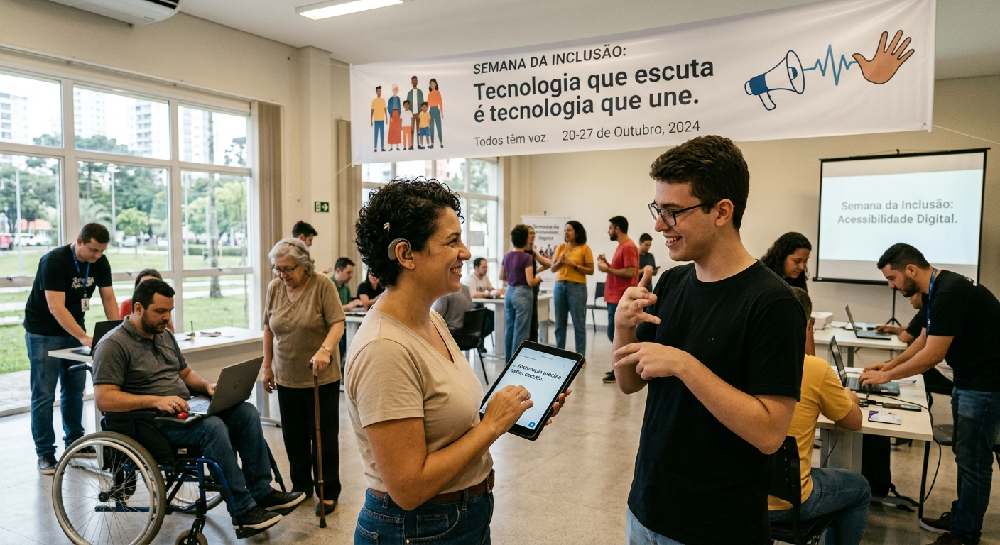
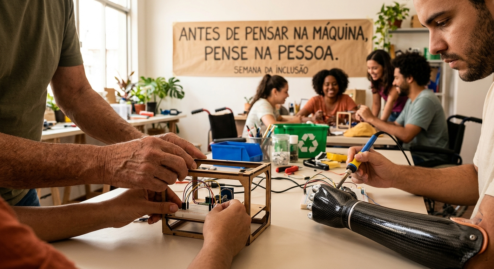

SEMANA DA INCLUSÃO · TECNOLOGIA HUMANA
A importância da sensibilidade na tecnologia
Tecnologia não é só código, telas e dados. É sobre pessoas. Criar com sensibilidade significa perceber diferentes necessidades, ouvir experiências e transformar inovação em acesso.
TECNOLOGIA PARA TODOS
Tecnologia também precisa saber escutar.
Criar tecnologia não significa apenas desenvolver sistemas rápidos e bonitos. Também significa entender as pessoas que irão utilizar essas ferramentas.
Cada pessoa possui necessidades, experiências e formas diferentes de interagir com o mundo digital.
Pensar em inclusão desde o início de um projeto torna a tecnologia mais acessível e humana.

ACESSIBILIDADE
Pequenos detalhes podem criar grandes mudanças.
Legendas em vídeos, contraste adequado, textos fáceis de compreender, navegação por teclado e compatibilidade com leitores de tela podem tornar uma experiência digital mais acessível.
A acessibilidade não deve aparecer somente depois que um produto está pronto.
Ela pode fazer parte de todas as etapas do desenvolvimento.
AUTONOMIA E MOBILIDADE
Liberdade de movimento através da inovação.
Garantir a acessibilidade física e digital para pessoas paraplégicas é essencial para remover barreiras diárias e promover independência real.
Soluções tecnológicas adaptadas e espaços planejados permitem que todos naveguem, trabalhem e participem ativamente da sociedade sem limitações.
A verdadeira inclusão acontece quando o ambiente e a tecnologia se adaptam às necessidades de cada ser humano.
SENSIBILIDADE
Antes de pensar na máquina, pense na pessoa.
A sensibilidade na tecnologia começa quando deixamos de imaginar que todas as pessoas possuem as mesmas necessidades.
Observar diferentes perspectivas ajuda a criar produtos digitais mais claros, acessíveis e confortáveis.
Tecnologia inclusiva é aquela que busca diminuir barreiras e ampliar possibilidades.

Quando a tecnologia entende pessoas, ela deixa de ser apenas ferramenta e passa a ser ponte.
Uma reflexão para a Semana da Inclusão.
PODCAST
Ouça a conversa
sobre tecnologia e inclusão.
EPISÓDIO ESPECIAL
Sensibilidade na Tecnologia
Uma conversa sobre inclusão, acessibilidade e a importância da sensibilidade no desenvolvimento de novas tecnologias.
VÍDEO
Veja a ideia
ganhar vida.
Adicione seu vídeo em media/video.mp4
Uma tecnologia verdadeiramente humana considera diferenças, remove barreiras e amplia possibilidades.
Nós construímos máquinas mais inteligentes, mas estamos a construir um mundo mais humano?
A tecnologia tem um coração, ou ela apenas mede eficiência?
Suas decisões moldam vidas. Para alguns, um portal, para outros, uma barreira invisível.
Para mim, para você, para quem nós escolhemos não ver.
Eficiência sem empatia é invisibilidade. É transformar uma espera angustiante em apenas mais um número na tela.
É esquecer quem está por trás dos dados, mas podemos escolher outro caminho.
Onde a acessibilidade não é um extra, mas o começo.
Onde a escuta guia a inovação.
Imagine uma tecnologia que se sente, que compreende, que se adapta a nós e não o contrário.
Uma tecnologia que cuida.
Porque a tecnologia não é apenas sobre o que podemos construir, é sobre como fazemos as pessoas se sentirem e quem escolhemos não deixar para trás.
NA PRÁTICA
Sensibilidade é uma
decisão de projeto.
Ela aparece nos detalhes: contraste adequado, legendas, navegação por teclado, linguagem simples, leitores de tela, feedbacks claros e testes com pessoas diferentes.
Voltar ao início ↑Mais pessoas conseguem usar.
Experiências são tratadas com respeito.
Impactos são considerados antes da entrega.
Diferentes vozes participam da criação.